Migrating a case from Eclipse SE to
The below diagram shows the export and import process for a given case from Eclipse SE to
|
|
Important: There are some case elements that do not transfer from the Eclipse SE case to the
After the import of case and production history information is complete, you can set up these items, with the exception of transcripts, in the newly created |
|
|
Note: Private tags also are not exported from Eclipse SE. To Convert a Private Tag into a Public Tag: To do so:
|
Select Entire Case.
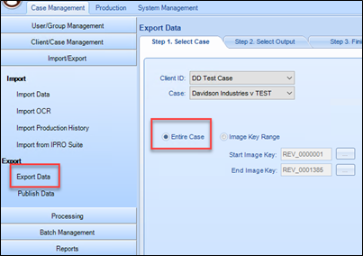
On the Step 2. Select Output tab.
Under Output Directory:
Select Output Location.
Check Copy Native files to output folder.
Check Export Text as File.
Check Export .CSE.
All Database Fields selected.
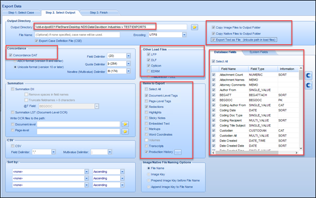
|
|
Important: For "Image/Native File Naming Options" select Image Key.
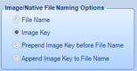 |
On the Step 3. Finish tab, click Start Export.
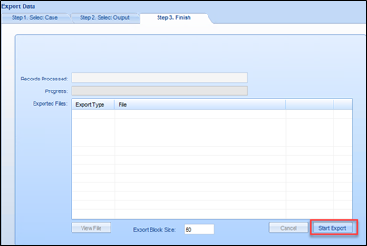
Create your case in
Import Eclipse SE Case Data into
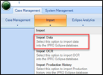
On the tab Step1. Select Source, in the Import file field use .DLF.
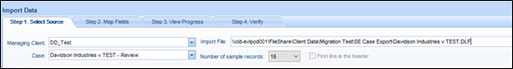
Select Auto-Select by Field Name and Map any other fields needed.
Edit/Update paths for Text and Natives.
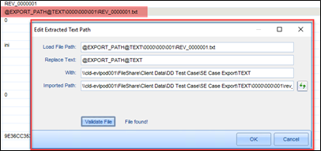
There are two options for exporting the production history from your case.
Production included an Image File (LFP or OPT).
Production did not include an Image File.
Select the case.
On the Step 1: Select Case tab select Production History.
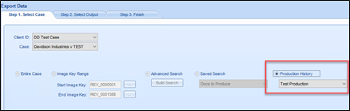
Under the Other Load files section, check .LFP.
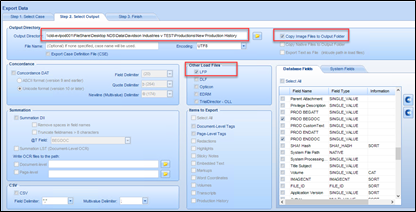
On the Step 3. Finish tab, click Start Export.
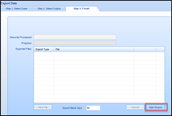
From Eclipse SE Administration select Import/Export > Export Data.
On the Step 1: Select Case tab select Production History.

On the Step 2: Select Output tab:
Enter an Output Directory.
Make sure that Copy Image Files to Output Folder is selected.
Select LFP under Other Load Files.

On the Step 3. Finish tab, click Start Export.
Run each Production, selecting the Production Job name from the Production History tab.

Click Load Production Settings.
Select/run the search originally used for the production.
Click the Use Range for Production button.
Select Output Options.
Select Images for Output Type.
Select LFP as a Load File.

Select Endorsement Options.
Select the Production Job name under Select Image Key > Use Produced Key.
This will export the documents with the correct production bates numbers.

Uncheck the Update Production History box and run the production.
Copy your Production History to your Case Data folder in
Open the case in
Run your Production Search.
Modify the Grid to show only BEGDOC and PRODBEGDOC fields.
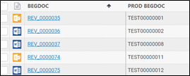
Select all documents,click Actions and then select Export.
Click Export.
This is your Cross Reference File. Copy it to your Production History folder.
Edit the Production History .LFP
Use Find and Replace to replace the volume.
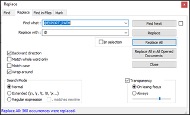
Update the Path with the full UNC path.
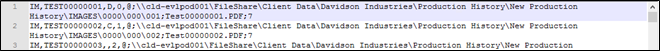
In Eclipse Admin, select Import > Import Production History.
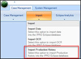
Enter a Production Name.
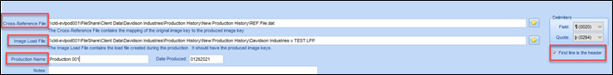
Click the Import Production Job button.
When the import is finished, you have successfully completed the Eclipse SE to